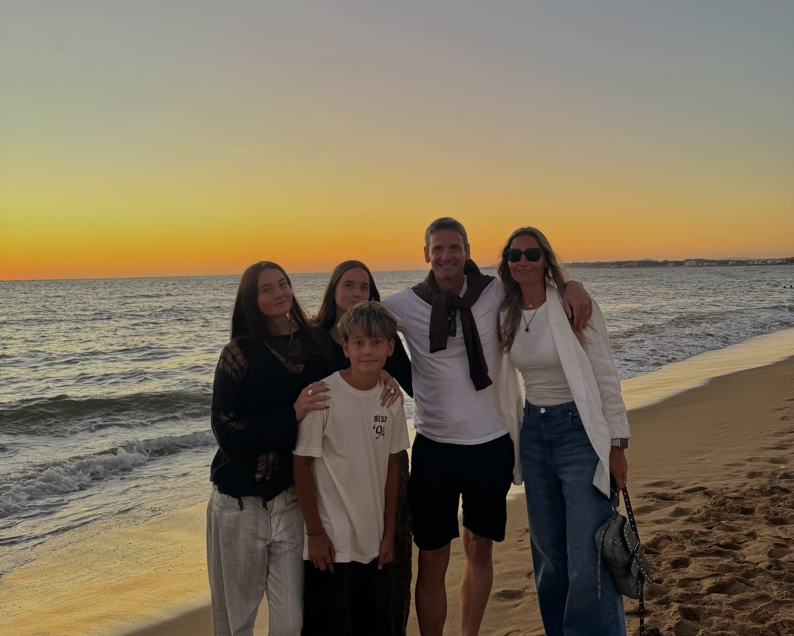
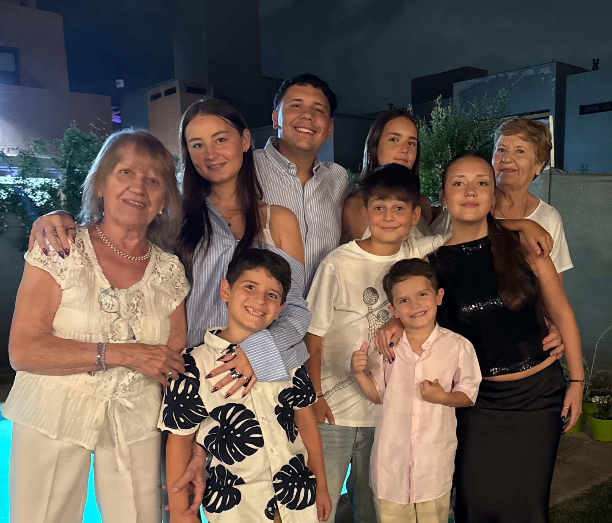
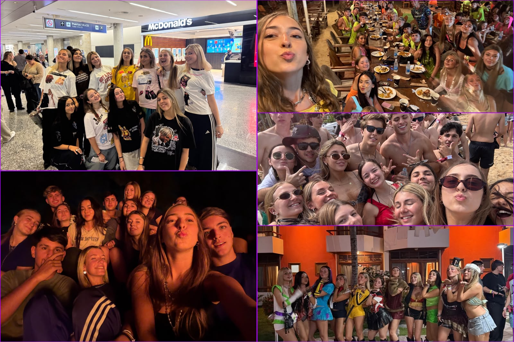
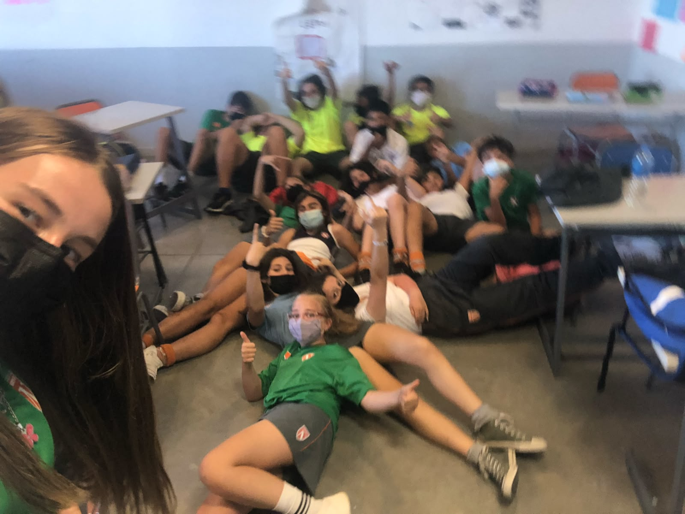
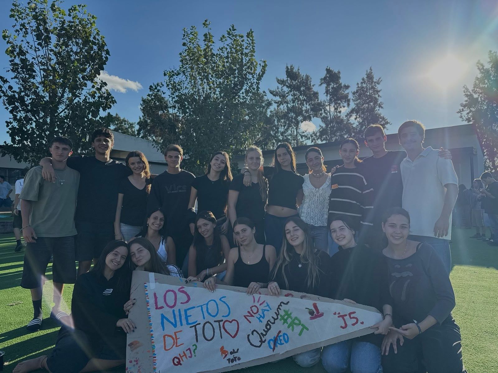
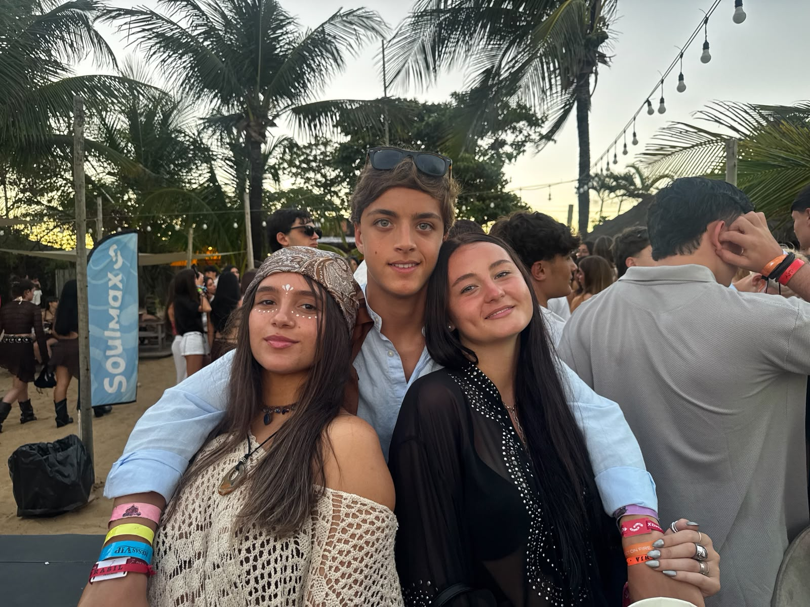
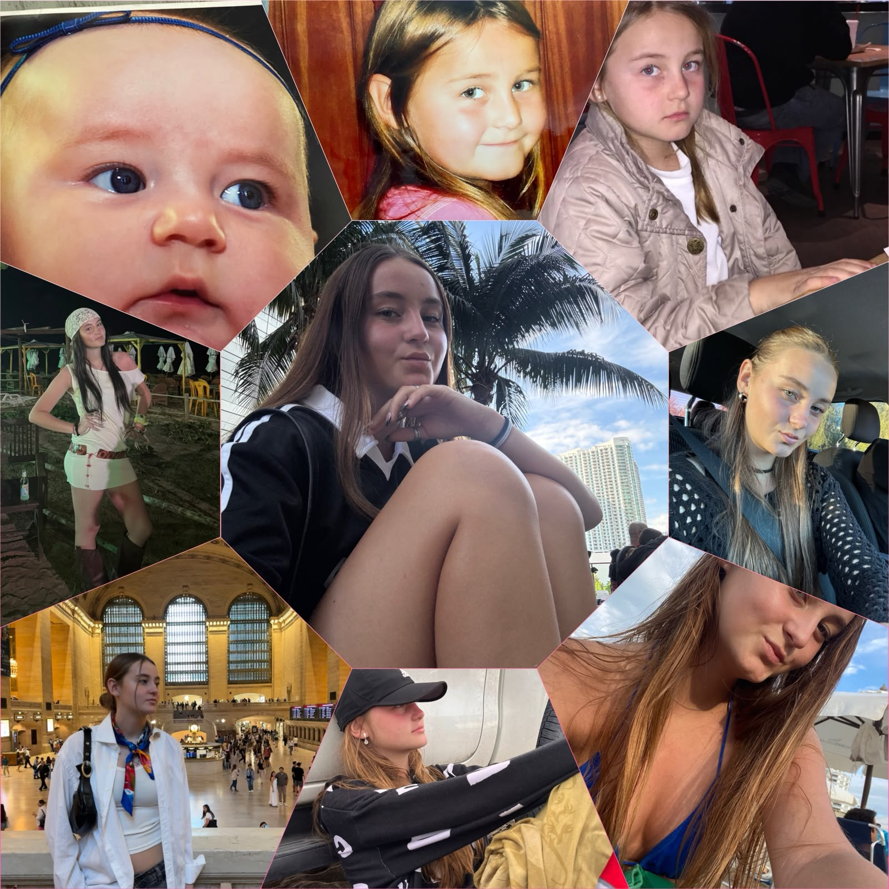

Sobre mí
Me llamo Martina y este es mi portfolio.
¿QUIÉN SOY?
Soy Mar
1. Introducción
Cuando me preguntan quién soy, nunca tengo una respuesta definitiva. No sé si sé al 100% quién soy, ni tampoco sé si alguna vez voy a llegar a descubrirlo por completo. Creo que, en realidad, conocerse a uno mismo es algo que nunca termina. Somos el resultado de una mezcla con todo lo que vivimos, de las personas que conocemos, de las decisiones que tomamos, de las cosas que perdemos y también de las que elegimos quedarnos.
2. Mi familia

Pero hay algunas cosas que sí sé. Me llamo Martina, vivo con mis dos papás, Martín y Romina, y mis dos hermanos, Joaquina y Francisco. Soy la mayor, su primera hija, algo nuevo para ellos, su primera experiencia.
Siempre tuve una relación muy cercana con mis papás, especialmente con mi mamá. Ella fue y sigue siendo una de mis mayores contenciones. Me enseñó muchos de mis valores y, cuando miro quién soy hoy, sé que una gran parte de mí se la debo a ella. Siempre estuvo, incluso en momentos en los que ni yo misma podía conmigo. Me crió, me acompañó y me enseñó, muchas veces sin darse cuenta, la importancia de estar para los demás. Mis papás siempre me dieron todo y nunca me faltó nada. Hoy valoro muchísimo el esfuerzo que hicieron y hacen por nosotros, y sé que muchas de las oportunidades que tengo son gracias a ellos.
Con mis hermanos siempre me costó un poco más la relación. Desde que soy chica sentía que eran más ellos dos y yo aparte. Con el tiempo, fuimos creciendo y aprendiendo. Hoy somos mucho más cercanos. Aprendimos a querernos, a entendernos y, sobre todo, a convivir mejor.
3. Mis raíces mendocinas

Un dato no menor es que mis papás son ambos mendocinos. Nacieron y vivieron toda su vida ahí. En Mendoza construyeron sus personalidades, sus valores, sus amistades y gran parte de quienes son. Cuando mi papá empezó a trabajar en su primera empresa tuvo que mudarse a Buenos Aires, y mi mamá decidió irse con él. Fue un impulso, algo que le dijo que tenía que hacerlo. Y gracias a esa decisión, dos años después nací yo.
De mi familia paterna yo era la tercera nieta, pero de la materna era la primera: la primera hija, la primera sobrina y la primera nieta. Era algo nuevo para todos y durante mucho tiempo tuve mucha atención. Creo que, en parte por eso, muchas veces me cumplieron mis caprichos. Hoy trato de reconocerlo y de ser cada día un poco menos caprichosa y más consciente de todo lo que tengo.
4. El colegio y mis amigos

Me mudé a esta zona a los cinco años y empecé en el Northfield. Ahí pasé gran parte de mi infancia y adolescencia. A medida que fui creciendo fui conociendo a algunas de las personas más importantes de mi vida, que hoy puedo llamar mis pilares.
Tengo un grupo de amigas que es una parte fundamental de mi día a día. Ema, la persona que mejor me escucha y aconseja. Pau, alguien que admiro por todo lo que hace, muy inteligente y logica. Male, mi compañera en la mayor parte de mi vida y lo seguira siendo siempre. Palo, su sensibilidad y atencion me hacen sentir una conexion genuina y fuerte con ella. Valen, la persona que mas me hace reir en este mundo, disfruto pasar todos mis dias con valentina. Mimi, alguien en que confio 100%, mi pilar, y mi apoyo en todas. Ro, una persona que agradezco tener cerca, me rio, lloro, y nos entendemos con todo. Guada, se que siempre esta, con un consejo, una esucha o un simple gesto. Pili, siempre va a tratar de resolver, y organizar, eso es algo que admiro de ella. Y Maggie, una persona que puedo estra riendome por absolutamente todo, como charlando sobre temas personales y esuchandonos. Estas 10 personas son mi sostén, las que están para sacarme una sonrisa, aconsejarme, escucharme y ayudarme cuando tengo problemas. Pero, sobre todo, son personas que se alegran genuinamente por mis logros, mis oportunidades y cada vez que algo bueno me pasa. Con los años entendí que tener personas así cerca es algo que no hay que dar por sentado. Ademas, mis amigos, son los que hacen que un día cualquiera termine siendo divertido, aunque no estemos haciendo absolutamente nada especial. Bau y elias, mis mejores amigos, son las personas mas insoportables pero que mas me enseñaron y estuvieron siempre. Gero que puedo tener miles de charlas, darle millones de consejos pero siempre va a terminar haciendo lo que quiere. Pablito, de las personas que mas me hacen reir, siempre compartiendo todo. Chete que con su tranquilidad me hace sentir escuchada. Ferruelo, nadie me hace reir mas que agustin, puedo joder y al mismo tiempo hablar sobre cosas personales. Cada uno de ellos llenan partes distintas de mi, y se los voy a agradecer siempre.
También creo que las amistades me enseñaron muchísimo sobre mí. A descubrir quien soy y a conocer como me transformo en el mundo.
5. La familia a la distancia
A medida que fui creciendo también me fui dando cuenta de lo necesaria que es la familia para uno. Y algo que siempre me dolió fue la distancia con la mía. Escuchaba a mis amigos o personas cercanas quejarse porque el domingo familiar significaba almorzar con sus abuelos, tíos o primos, mientras yo deseaba tener a mi familia cerca para poder vivir lo mismo.
Con el tiempo entendí que muchas veces nos quejamos sin darnos cuenta de todo lo que tenemos. Eso me hizo empezar a valorar mucho más las cosas pequeñas y a intentar quejarme un poco menos. No siempre lo logro, obviamente, pero trato de recordarlo.
6. La pandemia

Siguiendo con la línea temporal, pasé la primaria en el Northfield y después empecé la secundaria. Fue un gran cambio. Comenzaban mis últimos años de colegio y, sin saberlo, también estaba por empezar una etapa que iba a cambiar muchas cosas.
Llegó 2020 y con él la pandemia. Fueron años difíciles. Costó acostumbrarme a una realidad completamente distinta, a no poder relacionarme normalmente con mis amigos y a estar lejos de muchas de las personas que quería. Pero pasó, y hoy puedo mirar hacia atrás y decir que también pude superar eso.
7. Mis abuelos
Después llegaron 2021 y 2022, que podría decir que fueron de los años más difíciles de mi vida hasta ahora.
A pesar de que siempre hubo más de mil kilómetros de distancia con mi familia, cuando era más chica viajaba muy seguido. Y las relaciones más puras y fuertes que tenía, sin dudas, eran con mis dos abuelos, Jorge y Mario. Mis abuelas y mis tías siempre fueron más cercanas a mis hermanos y a mis primos más chicos. En cambio, mis abuelos siempre tuvieron una relación muy especial conmigo. Eran todo para mí.
Una de las cosas que más agradezco es haber podido disfrutarlos tanto. Pero también aprendí algo que probablemente nunca voy a olvidar: uno nunca sabe cuándo alguien se va, ni que un “nos vemos pronto” puede terminar siendo un adiós para siempre.
En 2020 perdí a mi abuelo. Fue una de las caídas más grandes que tuve. La persona que había sido como un papá para mí ya no estaba. En ese momento tenía solamente 12 años y no sé si realmente pude comprender todo lo que significaba. Hoy, sin embargo, puedo entender cuánto me hace falta y cuánto me hubiera gustado poder compartir más momentos con él.
Pasó ese año y volver a Mendoza fue raro. Todo era distinto. Todos notábamos su ausencia. Era una herida recién abierta y estábamos todos dolidos.
Un año después, casi entrando en 2022, me acuerdo perfectamente de una mañana muy temprano en la que mi papá me despertó para decirme que se iba a Mendoza en un vuelo de urgencia porque mi otro abuelo había fallecido. Yo estaba en shock. No podía reaccionar. Lo que más me dolía era ver a mi papá intentando no llorar porque trataba de mantenerse fuerte por nosotros. Pero a mí se me volvió a caer el mundo.
8. La fe

Llegó 2024. Ahí fue cuando mi fe reapareció. Arranqué Confirmación, empecé a acercarme más a la parroquia y Jesús y mi fe comenzaron a ocupar una parte muy importante de mi vida.
Conocí personas increíbles y tuve un grupo que me acompañó y me guió en ese camino. Hoy agradezco muchísimo haberlos conocido, especialmente a mis coordinadores. Se convirtieron en personas importantísimas para mí. Me ayudaron, estuvieron presentes y, sobre todo, me enseñaron. Aprendí muchísimo de ellos y siento que una parte importante de la persona que soy hoy también se construyó gracias a todo lo que viví junto a ellos. Los admiro muchísimo y son personas a las que aspiro a parecerme en muchos sentidos. Ahí también conocí a “More”, mi mejor amiga, mi madrina de confirmación, mi hermana, absolutamente todo. La persona más genuina y transparente que yo conozco: es simple, es buena, es generosa, es todo para mí, y sé que Dios hizo que nos cruzáramos en este camino porque necesitaba encontrar a alguien así en mi vida.
Me acuerdo que cuando la fe empezó a formar parte de mi vida a gran escala, muchas cosas comenzaron a mejorar. Encontré en ella una forma de refugiarme, de sentirme acompañada y de darle un sentido diferente a muchas cosas que me habían pasado. Desde ahí sentí que, poco a poco, iba estando mejor.
9. Hoy: soy Mar
Y eso me lleva a hoy.
Acabo de terminar mi ciclo de Post Confirmación. Es otro ciclo que se cierra. Fue un grupo nuevo, raro y distinto. No puedo compararlo con Confirmación porque fueron experiencias completamente diferentes, pero fue lindo y también me dejó personas, aprendizajes y recuerdos que voy a llevar conmigo.
Creo que todas estas personas, experiencias y situaciones fueron formando a la persona que soy hoy.
Soy Mar.
Soy una persona muy socianle, que trata de ser alegre todo el tiempo. Soy muy sensible y muchas veces me afectan las cosas más de lo que muestro. Soy una persona que todavía busca bastante la aprobación del resto y que muchas veces es insegura de sí misma, pero que con el tiempo aprendió, aunque sea un poquito, a quererse y aceptarse más.
Soy alguien que escucha, que aconseja y que intenta hacer sentir bien a los demás. Me gusta hacer reír a la gente, compartir, hablar y estar rodeada de personas. También soy bastante exigente conmigo misma. Me gusta que las cosas salgan bien y, cuando siento que algo no está saliendo como esperaba, puedo estresarme muchísimo.
También pienso muchísimo. A veces demasiado. Analizo lo que hice, lo que dije, lo que podría haber hecho distinto y lo que puede llegar a pasar. Creo que esa forma de pensar me ayuda a conocerme, pero también puede hacer que me preocupe por cosas que todavía ni siquiera pasaron.

11. Mis dudas y mis miedos
Hoy puedo decir que me siento rara. Estoy en un momento de muchas dudas. Gran parte de esto comenzó con pensar en mi carrera y en mi futuro. No saber qué va a pasar con mi vida me genera muchísima incertidumbre. Durante mucho tiempo pensé que a esta edad ya debería saber exactamente qué quiero hacer, pero cada vez entiendo más que no necesariamente es así.
Soy una persona con muchos miedos, pero creo que los más grandes son el futuro y el perder a personas de mi vida. Me da miedo no conseguir lo que quiero, no tener éxito, equivocarme o no encontrar aquello que estoy buscando. Me da miedo que las cosas cambien, que la gente desaparezca y no poder contar con nadie.
Pero hay algo que sí tengo claro: mi familia siempre va a estar conmigo, como lo estuvo toda mi vida. Por eso trato de disfrutarlos y aprovecharlos al máximo. Si hay algo que aprendí a lo largo de mi vida es que nunca sabemos cuándo las personas se van, y que muchas veces creemos que tenemos todo el tiempo del mundo cuando en realidad no sabemos cuánto tiempo tenemos.
11. Cierre
También aprendí que las personas que aparecen en nuestra vida dejan algo en nosotros. Nos enseñan a través de todo, o simplemente estando. Y creo que todas esas personas forman un pedacito de quiénes somos.
Todo esto es una parte de mi vida, pero no es el 100% de lo que soy. Todavía tengo muchísimo por conocer y aprender sobre mí. No sé quién voy a ser dentro de cinco, diez o veinte años. Ser yo significa seguir creciendo, equivocándome, aprendiendo, queriendo, perdiendo, conociendo personas y encontrando nuevas partes de mí.

Y si hay algo que sé, es que todavía me queda muchísimo por descubrir.